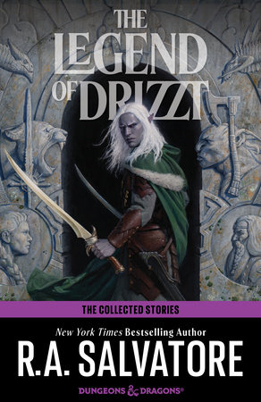
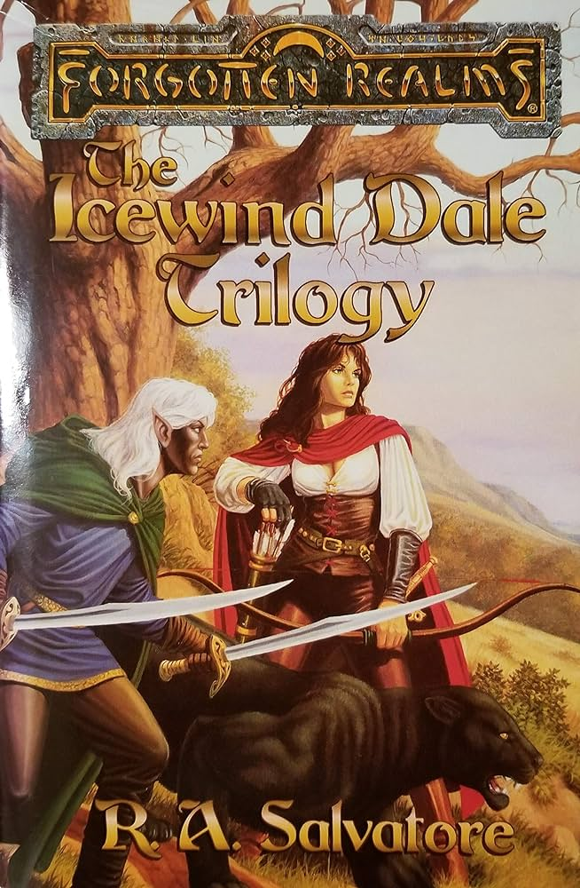
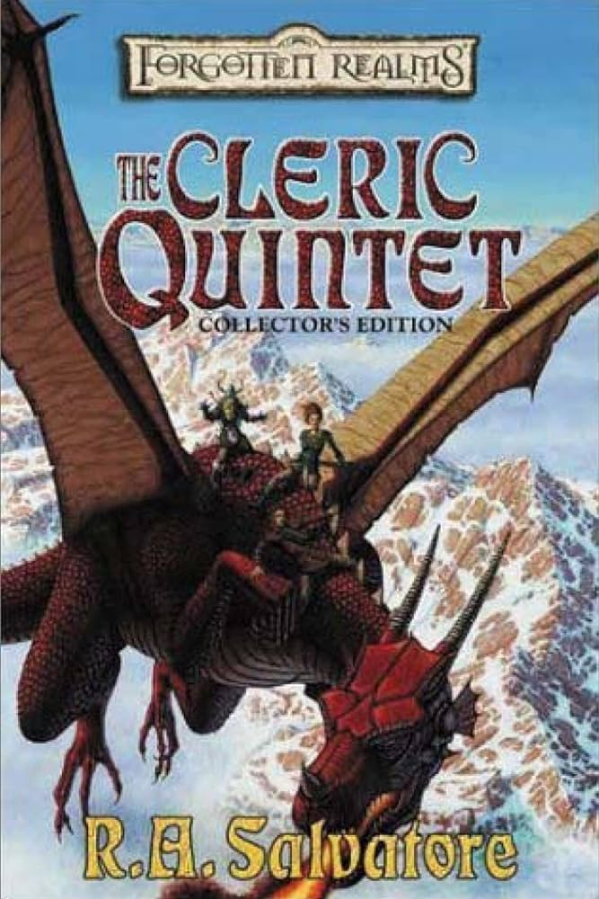

Assignment 4.2: Build a Web Page Exercise - Part 4
The Legend of Drizzt Do'Urden

The Tale of Drizzt Do'Urden, from his birth to his rise to the surface world from the Underdark.
(Author: R.A.Salvatore)
The Icewind Dale Trilogy

The Tale of Drizzt Do'Urden and his Friends from the surface as teh forces of evil move about them.
(Author: R.A.Salvatore)
The Cleric Quintet

The Tale of Cadderly Bonaduce and his exploits within the Forgotten Realms.
(Author: R.A.Salvatore)
Cody's Landing Page